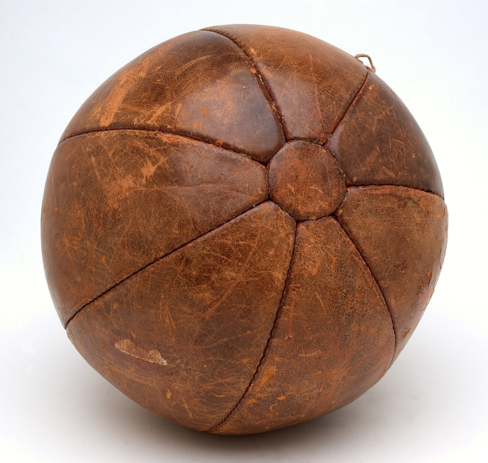

In the year 1863, the first specifications for footballs were set by the Football Association. Previous to this, footballs were made out of the inflated animal bladder, with later leather coverings to help footballs maintain their shapes.In 1872 the specifications were revised, and have been kept essentially unchanged by the International Football Association Board. Differences in footballs made since this rule came into effect have been with the material used to create them.
Footballs have dramatically changed over time. During medieval times balls were normally made from an outer shell of leather filled with cork shavings.Another method of creating a ball was using animal bladders for the inside of the ball making it inflatable. However, these two styles of footballs were easy to puncture and were inadequate for kicking. It was not until the 19th century that footballs developed a more modern appearance.
during the 1900s, footballs were made out of leather with a leather lace used to stitch the panels.Although leather was perfect for bouncing and kicking the ball, when heading the football it was very painful. This problem was probably due to the water absorption if the leather from the rain, which caused a considerable increase in weight, causing head and neck injuries. Another problem with the early footballs is that they deteriorated quickly.